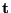
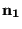
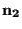

Next: Two-node 2D truss element Up: Element Types Previous: Two-node 3D beam element Contents
In CalculiX this is the general purpose beam element. The node numbering is shown in Figure 73.
In each node a local Cartesian system is defined.  is the normalized local tangential vector,  is a normalized vector in the local 1-direction and  is a normalized vector in the local 2-direction, also called the normal. The local directions 1 and 2 are used to expand the beam element into a C3D20 or C3D20R element according to Figure 74.
For each node of the beam element 8 new nodes are generated according to the scheme on the right of Figure 74. These new nodes are used in the definition of the brick element, and their position is defined by the local directions together with the thickness and offset in these directions.
The tangential direction follows from the geometry of the beam element. The normal direction (2-direction) can be defined in two ways:
In the latter case, can be defined either
If a node belongs to more than one beam element, the tangent and the
normal is first calculated for all elements to which the node belongs.
Then, the element with the lowest element number in
this set for which the normal was defined explicitly using a *NORMAL
card is used as reference. Its normal and tangent are defined as
reference normal and reference tangent and the element is stored in a
new subset. All other elements of the same type in the set
for which the normal and tangent have an angle smaller than  with the
reference normal and tangent and
which have the same local thicknesses, offsets and sections are also included in this
subset. All elements in the subset are considered to have the same
normal and tangent. The normal is defined as the normed mean of all normals
in the subset, the same applies to the tangent. Finally, the normal is
slightly modified within the tangent-normal plane such that it is
normal to the tangent. This procedure is repeated until no elements
are left with an explicitly defined normal. Then, the element with the
lowest element number left in the set is used as reference. Its normal and tangent are defined as
reference normal and reference tangent and the element is stored in a
new subset. All other elements of the same type in the set
for which the normal and tangent have an angle smaller than
with the
reference normal and tangent and
which have the same local thicknesses, offsets and sections are also included in this
subset. All elements in the subset are considered to have the same
normal and tangent. The normal is defined as the normed mean of all normals
in the subset, the same applies to the tangent. Finally, the normal is
slightly modified within the tangent-normal plane such that it is
normal to the tangent. This procedure is repeated until no elements
are left with an explicitly defined normal. Then, the element with the
lowest element number left in the set is used as reference. Its normal and tangent are defined as
reference normal and reference tangent and the element is stored in a
new subset. All other elements of the same type in the set
for which the normal and tangent have an angle smaller than  with the
reference normal and tangent and
which have the same local thicknesses, offsets and sections are also included in this
subset. All elements in the subset are considered to have the same
normal and tangent. This normal is defined as the normed mean of all normals
in the subset, the same applies to the tangent. Finally, the normal is
slightly modified within the tangent-normal plane such that it is
normal to the tangent. This procedure is repeated until
a normal and tangent have been defined in each element. Finally, the 1-direction is defined by
.
with the
reference normal and tangent and
which have the same local thicknesses, offsets and sections are also included in this
subset. All elements in the subset are considered to have the same
normal and tangent. This normal is defined as the normed mean of all normals
in the subset, the same applies to the tangent. Finally, the normal is
slightly modified within the tangent-normal plane such that it is
normal to the tangent. This procedure is repeated until
a normal and tangent have been defined in each element. Finally, the 1-direction is defined by
.
If this procedure leads to more than one local coordinate system in one and the same node, all expanded nodes are considered to behave as a knot with the generating node as reference node. Graphically, the beam elements partially overlap (Figure 75).
Consequently, a node leads to a knot if
Similarly to shells applied rotations or moments (bending moments, torques) in static calculations are taken care of by the automatic generation of mean rotation MPC's.
Beam and shell elements are always connected in a stiff way if they share common nodes. This, however, does not apply to plane stress, plane strain and axisymmetric elements. Although any mixture of 1D and 2D elements generates a knot, the knot is modeled as a hinge for any plane stress, plane strain or axisymmetric elements involved in the knot. This is necessary to account for the special nature of these elements (the displacement normal to the symmetry plane and normal to the radial planes is zero for plane elements and axisymmetric elements, respectively).
The section of the beam must be specified on the *BEAM SECTION keyword card. It can be rectangular (SECTION=RECT), elliptical (SECTION=CIRC), pipe-like (SECTION=PIPE) or box-like (SECTION=BOX). A circular cross section is a special case of elliptical section, pipe and box sections are special cases of a rectangular cross section obtained through appropriate integration point schemes. For a rectangular cross section the local axes must be defined parallel to the sides of the section, for an elliptical section they are parallel to the minor and major axes of the section. The thickness of a section is the distance between the free surfaces, i.e. for a circular section it is the diameter.
The thicknesses of the beam element (in 1- and 2-direction) can be defined on the *BEAM SECTION keyword card. It applies to the complete element. Alternatively, the nodal thicknesses can be defined in each node separately using *NODAL THICKNESS. That way, a beam with variable thickness can be modeled. Thicknesses defined by a *NODAL THICKNESS card take precedence over thicknesses defined by a *BEAM SECTION card.
The offsets of a beam element (in 1- and 2-direction) can be set on the *BEAM SECTION card. Default is zero. The unit of the offset is the beam thickness in the appropriate direction. An offset of 0.5 means that the user-defined beam reference line lies in reality on the positive surface of the expanded beam (i.e. the surface with an external normal in direction of the local axis). The offset can take any real value. Consequently, it can be used to define composite structures, such as a plate supported by a beam, or a I cross section built up of rectangular cross sections.
The treatment of the boundary conditions for beam elements is straightforward. The user can independently fix any translational degree of freedom (DOF 1 through 3) or any rotational DOF (DOF 4 through 6). Here, DOF 4 is the rotation about the global x-axis, DOF 5 about the global y-axis and DOF 6 about the global z-axis. No local coordinate system should be defined in nodes with constrained rotational degrees of freedom. A hinge is defined by fixing the translational degrees of freedom only.
For an internal hinge between 1D or 2D elements the nodes must be doubled and connected with MPC's. The connection between 3D elements and all other elements (1D or 2D) is always hinged.
Point forces defined in a beam node are not modified if a knot is generated (the reference node is the beam node). If no knot is generated, the point load is divided among the expanded nodes according to a 1/4-1/4-1/4-1/4 ratio for a beam mid-node and a (-1/12)-(1/3)-(-1/12)-(1/3)-(-1/12)-(1/3)-(-1/12)-(1/3) ratio for a beam end-node. Concentrated bending moments or torques are defined as point loads (*CLOAD) acting on degree four to six in the node. Their use generates a knot in the node.
Distributed loading can be defined by the labels P1 and P2 in the *DLOAD card. A positive value corresponds to a pressure load in direction 1 and 2, respectively.
In addition to a temperature for the reference surface of the beam, a temperature gradient in 1-direction and in 2-direction can be specified on the *TEMPERATURE. Default is zero.
Concerning the output, nodal quantities requested by the keyword *NODE PRINT are stored in the beam nodes. They are obtained by averaging the nodal values of the expanded element. For instance, the value in local beam node 1 are obtained by averaging the nodal value of expanded nodes 1, 4, 5 and 8. Similar relationships apply to the other nodes:
Element quantities, requested by *EL PRINT are stored in the integration points of the expanded elements.
Default storage for quantities requested by the *NODE FILE and *EL FILE is in the expanded nodes. This has the advantage that the true three-dimensional results can be viewed in the expanded structure, however, the nodal numbering is different from the beam nodes. By using the OUTPUT=2D parameter in the first step one can trigger the storage in the original beam nodes. The same averaging procedure applies as for the *NODE PRINT command. Section forces can be requested by means of the parameter SECTION FORCES. If selected, the stresses in the beam nodes are replaced by the section forces. They are calculated in a local coordinate system consisting of the 1-direction , the 2-direction and 3-direction or tangential direction (Figure 74). Accordingly, the stress components now have the following meaning:
The section forces are calculated by a numerical integration of the stresses over the cross section. To this end the stress tensor is needed at the integration points of the cross section. It is determined from the stress tensors at the nodes belonging to the cross section by use of the shape functions. Therefore, if the section forces look wrong, look at the stresses in the expanded beams (omitting the SECTION FORCES and OUTPUT=2D parameter).
For all elements different from beam elements the parameter SECTION FORCES has no effect.
In thin structures two words of caution are due: the first is with respect to reduced integration. If the aspect ratio of the shells is very large (slender shells) reduced integration will give you far better results than full integration. In order to avoid hourglassing a 2x5x5 Gauss-Kronrod integration scheme is used for B32R-elements with a rectangular cross section. This scheme contains the classical Gauss scheme with reduced integration as a subset. The integration point numbering is shown in Figure 76. For circular cross sections the regular reduced Gauss scheme is used. In the rare cases that hourglassing occurs the user might want to use full integration with smaller elements. Secondly, thin structures can easily exhibit large strains and/or rotations. Therefore, most calculations require the use of the NLGEOM parameter on the *STEP card.